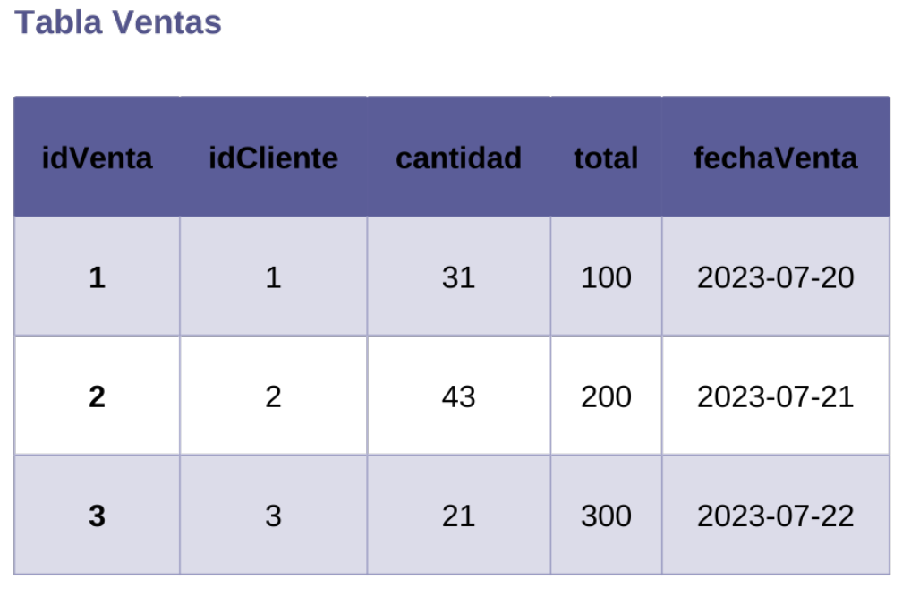

NORMALIZACIÓN BDD
NORMALIZACIÓN DEL CHEVERISIMOLas formas normales son un conjunto de reglas que se utilizan para diseñar bases de datos relacionales. Estas reglas ayudan a garantizar que las bases de datos sean eficientes, flexibles y fáciles de mantener..
Primera Forma Normal (F1)

Una tabla está en primera forma normal (INF) si cumple con los siguientes criterios: Cada columna contiene un valor a escalar y No hay valores duplicados en ninguna fila
segunda forma normal (F2)
Una tabla está en segunda forma normal (2NF) si esta en (1NF) y cada atributo no clave depende completamente de la clave primaria
Tercera forma normal (3F)
Una tabla está en tercera forma normal (3NF) si está en (2NF) y no hay atributos no clave que dependan de otros atributos no clave.
Cuarta forma normal (F4)
Una tabla está en cuarta forma normal (4NF) si está en 3NF y no hay dependencias transitivas entre atributos no clave.
Alalisis
Tabla Productos
La columna "nombre" no es atómica. El nombre de un producto podría dividirse en varios campos, como "nombre", "tipo" y "marca". La columna "descripción" no es atómica. La descripción de un producto podría dividirse en varios campos, como "ingredientes" y "métodos de preparación"
Tabla Proveedores
La columna "idProveedor" es clave principal, pero no determina de manera única el valor de la columna "nombre". Por ejemplo, dos proveedores diferentes podrían tener el mismo nombre.
Tabla Compras
La columna "idProducto" determina tanto la descripción como el precio del producto. Esto crea una dependencia transitiva.
Tabla Ventas
La columna "idCliente" es clave principal, pero no determina de manera única el valor de la columna "nombre". Por ejemplo, dos clientes diferentes podrían tener el mismo nombre
Normalizacion
• Dividir la tabla en dos tablas:
➣Tabla Productos: idProducto | nombre | tipo | marca |
➣Tabla DescripciónProductos: | idProducto | ingredientes | métodos de preparación |
➣ Tabla Proveedores:
• Dividir la tabla en dos tablas:
➣ Tabla Proveedores: | idProveedor | nombre |
➣ Tabla Contacto Proveedores: idProveedor teléfono | dirección |
➣ Tabla Compras:
• Dividir la tabla en dos tablas:
➣ Tabla Compras: | idCompra idProducto | idProveedor | cantidad | fechaCompra |
➣ Tabla ProductosCompras: | idCompra | idProducto precio | descripción |
➣ Tabla Ventas:
• Dividir la tabla en dos tablas:
➣ Tabla Ventas: | idVenta | idCliente | cantidad | total | fechaVenta |
➣ Tabla ClientesVentas: idVenta | idCliente | nombre | teléfono | dirección |
Explicación
Tabla Productos:
La columna "nombre" se dividió en dos columnas: "nombre" y "tipo". La columna "descripción" se dividió en dos columnas: "ingredientes" y "métodos preparación". deTabla Proveedores:
La columna "contacto" se dividió en dos tablas: "Proveedores" y "Contacto Proveedores".Tabla Compras:
La columna "descripción" se movió a la tabla "Productos Compras".Tabla Ventas:
La columna "cliente" se dividió en dos tablas: "Ventas" y "Clientes Ventas".Estas tablas están en primera, segunda y tercera forma normal, ya que cumplen con las reglas de cada forma normal.
>Tablas Normalizadas
tablas productos
Tabla Descripcion de productos
Tabla de Proveedores
"Tabla Contacto de Proveedores
Tabla de compras
Tabla Productos-Compras
Tabla Ventas
Tabla Clientes-Ventas
Estas tablas están en primera, segunda y tercera forma normal, ya que cumplen con las reglas de cada forma normal.
Beneficios de las tablas normalizadas
➣ Reducción de la redundancia de datos: Las tablas normalizadas eliminan los datos redundantes, lo que puede mejorar el rendimiento y la integridad de los datos.
➣ Mejora de la integridad de los datos: Las tablas normalizadas hacen que los datos sean más consistentes y completos.
➣ Pacilidan de mantenujemo: Las tablas normalizadas son más fáciles de mantener y actualizar
➣ Mejora de la e bielicia de las consultas: Las tablas normalizadas permiten realizar consultas más eficientes.